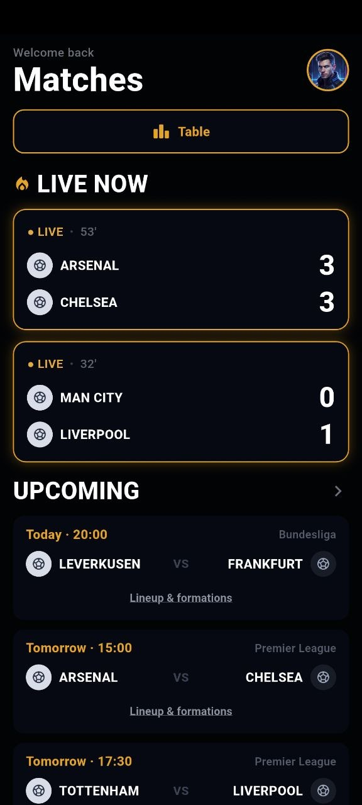
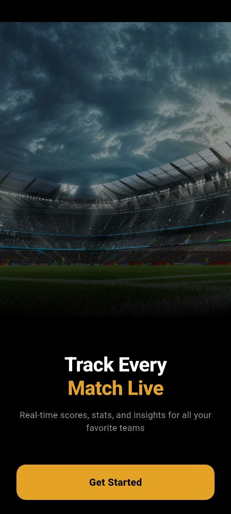
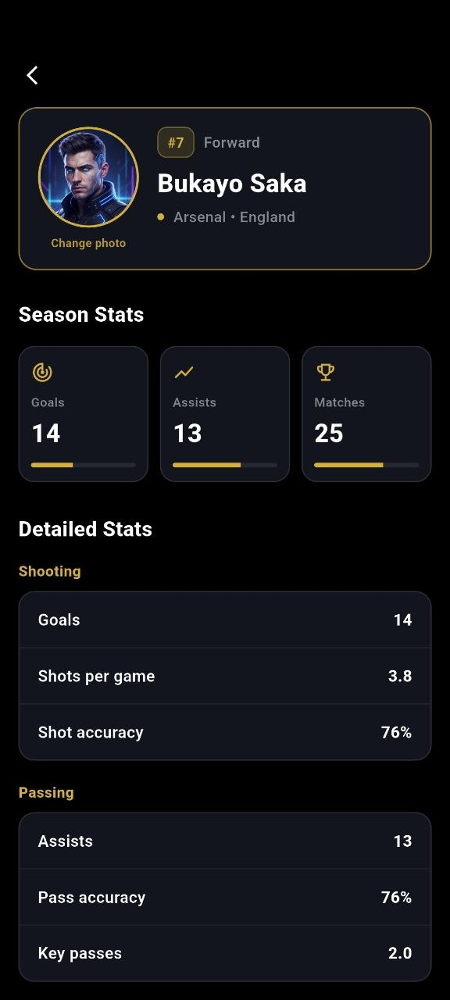
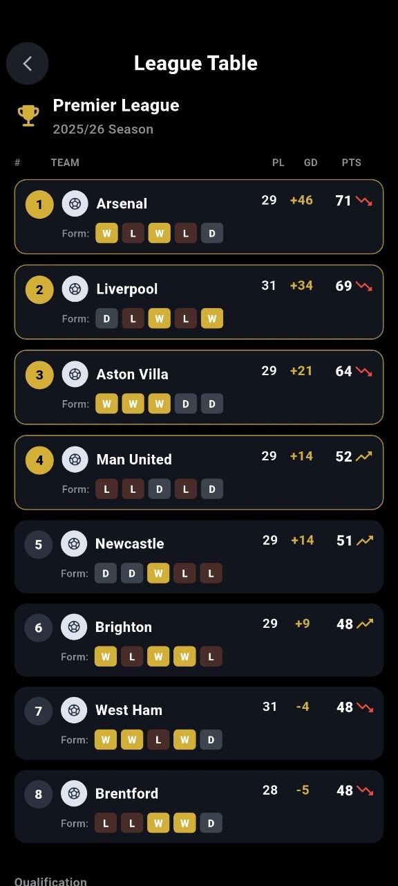
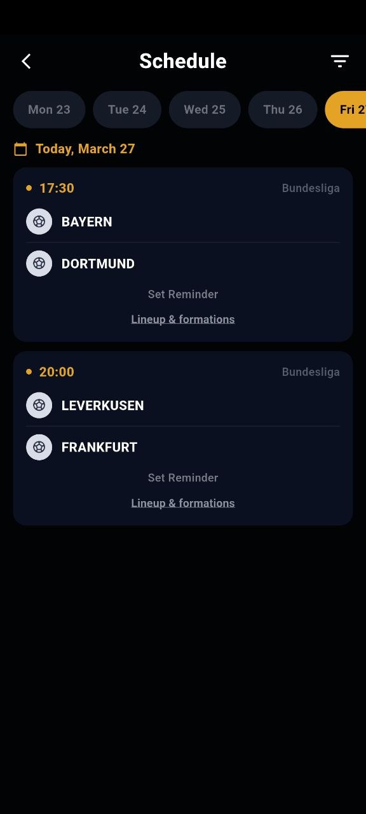
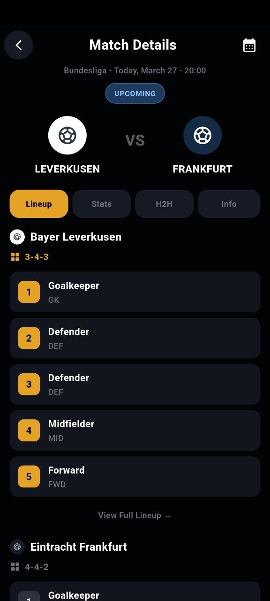
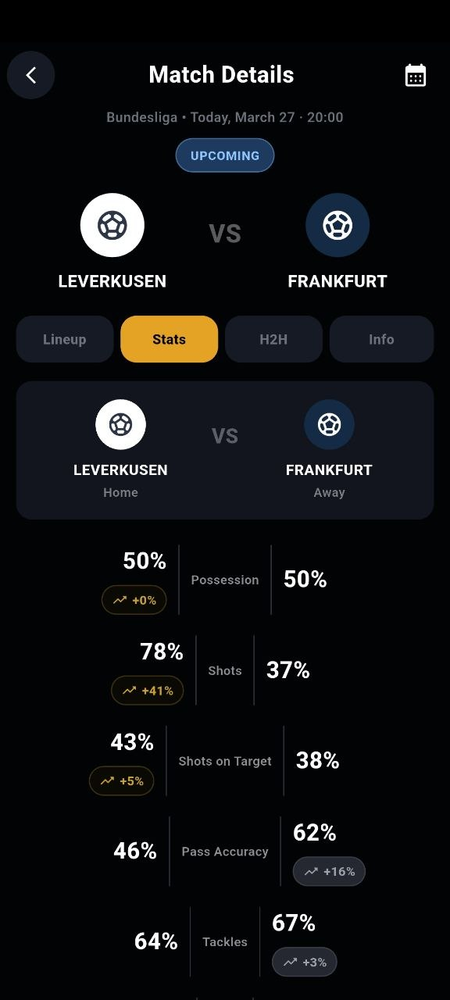
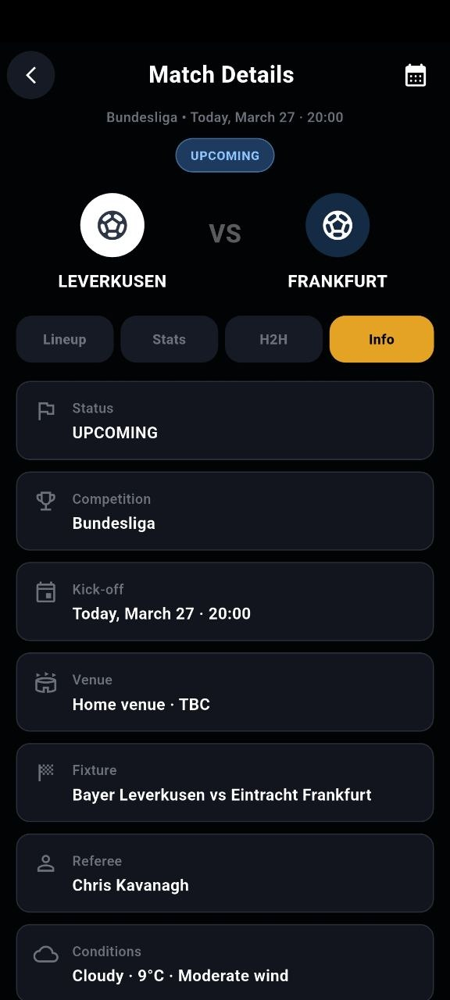
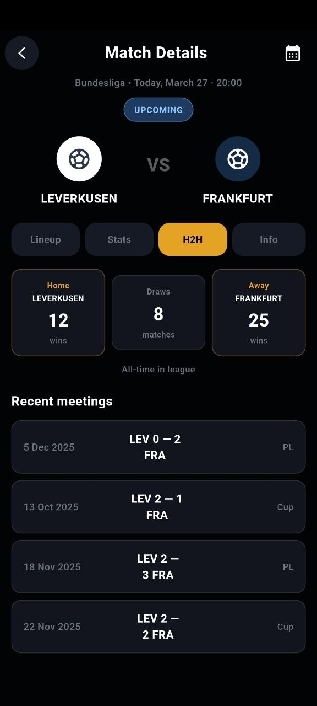

Live football tracking
Matches · Stats · H2H · Table · Players
Track every match, lineup, stat, and football storyline in one live app flow
MLBT Match Live brings live score tracking, match detail tabs, lineups, stat comparisons, head-to-head history, competition tables, player profiles, and fixture browsing into one modern football interface designed for fans who want more than basic score updates.


The app moves naturally from current fixtures into deeper competition context.

Users can move from match overview into individual football performance reading.
MLBT Match Live feels like a broadcast control panel for football fans who want live status, tactical tabs, standings, and player context in one connected product
Main product capabilities
Live and upcoming matches
The home screen supports quick scanning across live score blocks and upcoming fixtures.
Lineup view
Users can inspect squad structure, formation, and player order from dedicated lineup sections.
Stat comparison
The statistics tab compares possession, shots, passing, tackles, and other match indicators.
H2H history
The head-to-head tab gives a faster way to understand historical matchup outcomes.
Match information tab
Status, competition, kick-off, referee, venue, fixture name, and weather conditions stay readable in one place.
League table and player stats
The app goes beyond fixtures by including standings pages and detailed athlete performance profiles.
App journey
Move from live match tracking into deep football analysis screens
Intro entry
The first screen sets a premium live-match tone from the start.
Match home
The main dashboard brings live now and upcoming sections into one easy scan.
Lineup tab
The app gives tactical context instead of stopping at fixture names.
Stats tab
Users can read momentum and performance through more than just the scoreline.
H2H tab
Historical results make upcoming matches easier to evaluate.
Info tab
The app keeps technical match facts accessible without clutter.
Standings
Users can shift from fixture focus to full competition structure.
Player detail
The app adds individual athlete context on top of team and match data.
Schedule mode
The fixture system supports planning, not only live consumption.
Current screen
Start with the stadium intro
The opening screen presents the app as a live football companion focused on real-time scores, stats, and insights.
Interface showcase
Live dashboard and full schedule
The app anchors itself around a live match dashboard, then extends into a fuller competition schedule for upcoming planning.

Lineup and tactical setup
The lineup interface gives a structured look at formation and player roles for each club.

Statistics and comparisons
The stats tab turns the fixture into a broader performance story across possession, shots, accuracy, and more.

History and context
The H2H tab and info tab help users move from raw score interest into more complete match interpretation.


Standings and player performance
League tables and player profiles add scale to the app by connecting live football interest with competition and athlete analysis.
App preview carousel
Why the app feels stronger than a basic live score screen
★★★★★
“It feels more complete because it connects live matches with stats, historical comparison, tables, and player-level detail.”
Taras K.
Football app user
★★★★★
“The tab structure makes match details more useful because you can move through lineup, stats, H2H, and info without friction.”
Roman V.
Fixture-focused user
★★★★★
“League tables and player profiles make the app feel like a broader football analysis product, not only a live scoreboard.”
Den M.
Stats-oriented fan
Download app
Use MLBT Match Live to follow fixtures, inspect details, and read football context with more depth
Watch live score progress, open lineup tabs, compare stats, review H2H history, check match info, browse standings, and move into player performance pages inside one football-focused mobile product.